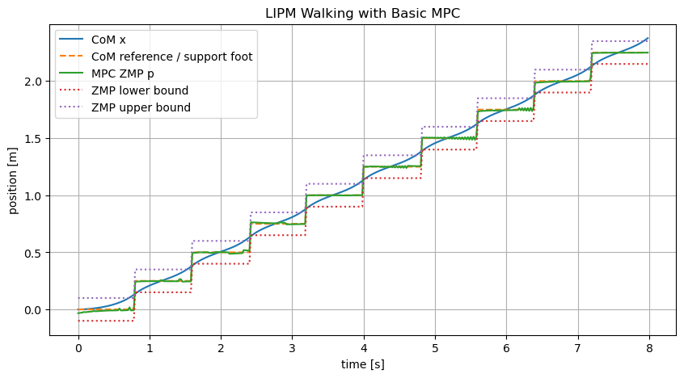
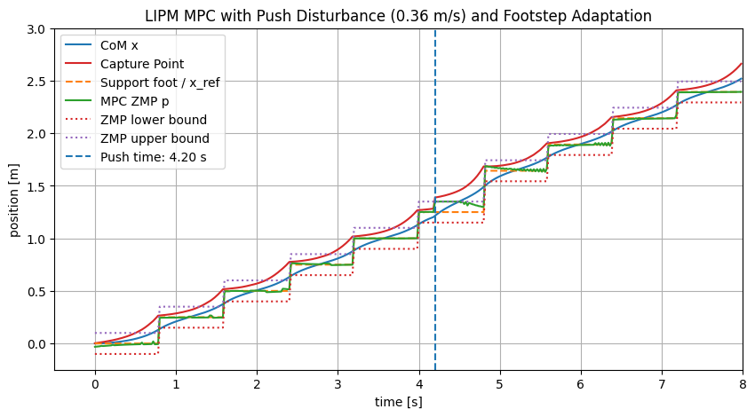
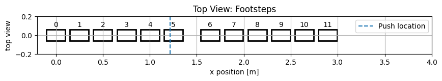

This project investigates balance recovery for bipedal robots under external disturbances using Model Predictive Control (MPC) and Capture Point (CP)-based footstep adaptation. A one-dimensional Linear Inverted Pendulum Model (LIPM) was used to represent the robot's center-of-mass (CoM) dynamics along the walking direction. An MPC controller was implemented to generate CoM and Zero Moment Point (ZMP) trajectories while respecting the support foot constraints. To improve disturbance recovery, a Capture Point-based footstep adaptation strategy was incorporated to adjust future footstep locations. In simulation, the combined approach successfully recovered balance after an instantaneous 0.36 m/s increase in CoM velocity.
The Linear Inverted Pendulum Model (LIPM) was adopted to simplify the dynamics of bipedal walking. The model assumes a constant center-of-mass height, motion along the horizontal walking direction, and zero applied torque about the lateral axis. Under these assumptions, the horizontal CoM acceleration is related to the ZMP position by:
Here, x represents the horizontal CoM position, h is the constant CoM height, g is gravitational acceleration, and zx represents the ZMP position. This simplified dynamic model provides the basis for predicting future CoM motion and designing the MPC controller.
The following simulation parameters were used:
Model Predictive Control (MPC) was implemented to predict future center-of-mass motion and determine the ZMP control sequence over a finite prediction horizon. At each simulation timestep, the controller evaluates the predicted system behavior using the LIPM dynamics and the planned support foot positions. A cost function was designed to penalize deviations of the CoM and ZMP from the support foot location:
The first term penalizes the distance between the CoM and the supporting foot, while the second term penalizes the distance between the ZMP and the supporting foot. The optimization also considers the allowable ZMP region associated with foot support. The first optimized ZMP input is applied to the system, and the optimization is repeated at the next timestep. This receding-horizon approach allows the controller to update its response as the robot's state changes during walking.

The Capture Point (CP) provides a balance-related measure based on the current CoM position and velocity. It represents the location where the robot would need to step to bring its motion toward a balanced state under the simplified model. The Capture Point is defined as:
Here, ξ is the Capture Point, x is the CoM position, ẋ is the CoM velocity, and ω = √(g/h) is the natural frequency of the inverted pendulum.
When an external disturbance changes the CoM velocity, the Capture Point shifts away from its nominal position. To estimate the required recovery step, the Capture Point at the next stepping time is predicted under a constant-ZMP assumption:
The predicted Capture Point is compared with the nominal next footstep location. The resulting Capture Point error determines the footstep adjustment, which is limited by the allowable stepping range. When an adjustment is required, the next and subsequent planned footsteps are shifted. MPC then recalculates the ZMP trajectory using the updated support foot positions.
The combined MPC and Capture Point-based footstep adaptation approach was evaluated through numerical simulation. An external disturbance was modeled as an instantaneous increase of 0.36 m/s in the robot's CoM velocity at t = 4.2 seconds. Following the disturbance, the Capture Point shifted away from the nominal walking trajectory. The footstep adaptation algorithm adjusted the future footstep plan by 0.143 m. Using the updated footstep positions, MPC recomputed the ZMP trajectory to accommodate the changed support locations. The resulting CoM and Capture Point trajectories remained bounded in the simulation, demonstrating successful balance recovery.
Velocity disturbance: 0.36 m/s
Disturbance time: 4.2 s
Footstep adjustment: 0.143 m
Simulation result: Successful balance recovery


This project demonstrates the effectiveness of combining Model Predictive Control with Capture Point-based footstep adaptation for balance recovery in a simplified one-dimensional bipedal walking model. By predicting future CoM motion and adjusting planned footstep locations, the controller successfully recovered balance following a 0.36 m/s velocity disturbance. The results demonstrate how predictive control and adaptive footstep planning can be combined to improve disturbance recovery during simulated bipedal walking.